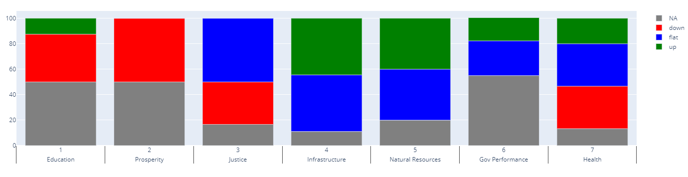

___________________
___________________
| Indicator Name | Policy Area | Goal | Type | Updated | Comp | Year | Value | Rank | Peer Rank | Previous Year | Previous Value | Previous Rank | Previous Peer Rank | Metric Trend | Target | Baseline | Target Value | Previous Trend |
|---|---|---|---|---|---|---|---|---|---|---|---|---|---|---|---|---|---|---|
| Health care expenditure growth | health | Value-driven system | Primary | yes | States | 2020 | 20.41 | 12 | 5 | 2019 | 17.16 | 5 | 4 | flat | Top 3 | 5.1 | 3.5% | Improving |
| Life expectancy | health | Public health | Primary | yes | States | 2018 | 79.2 | 25 | 8 | 2010 | 78.4 | 8 | 9 | up | Top 3 | 78.5 | 80.5 | Flat |
| Obesity | health | Public health | Primary | yes | States | 2020 | 34 | 33 | 11 | 2019 | 34.8 | 11 | 12 | down | Top 6 | 35% (adults); 32% (children) | 31% | Worsening (adults); Improving (children) |
| Persons with usual primary care provider | health | Availability of health care | Primary | yes | States | 2020 | 68.1 | 48 | 12 | 2019 | 68.2 | 12 | 12 | flat | Top 3 | 68% | 80% | Flat |
| Texans unable to get care due to medical cost | health | Affordability of health care | Primary | yes | States | 2020 | 18.8 | 51 | 12 | 2019 | 16.8 | 12 | 11 | down | Top 3 | 17% | 11% | Improving |
| Tobacco use | health | Public health | Primary | yes | States | 2020 | 14.7 | 17 | 7 | 2019 | 14.4 | 7 | 4 | down | Top 6 | 14% | 15% | Flat |
| Immunizations | health | Value-driven system | Primary | yes | States | 2020 | 72.1 | 43 | 11 | 2019 | 75.7 | 11 | 7 | flat | ||||
| Low birthweight | health | Public health | Primary | yes | States | 2020 | 8.5 | 29 | 6 | 2019 | 8.4 | 6 | 5 | flat | Top 3 | 8.4% | 8.1% | Worsening |
| Incidence of chronic disease | health | Public health | Primary | yes | States | 2020 | 8.1% | 9 | 2019 | 9.6% | N/A | up | ||||||
| Uninsured rate | health | Affordability of health care | Primary | yes | States | 2020 | 0.18 | 49 | 12 | 2019 | 0.175 | 12 | 12 | flat | Top 3 | 18% | 6.4% | Mixed |
| Preventable hospital admissions | health | Value-driven system | Primary | yes | States | 2020 | 4656 | 32 | 8 | 2019 | 53.2 | 8 | 9 | up | Top 3 | 7.2 | 5.9 | Mixed |
| Mortality amenable to health care | health | Public health | Primary | yes | States | 2020 | 7126 | 20 | 6 | 2019 | 7,240 | 22 | 10 | flat | Top 3 | 95 | 71 | Flat |
| Availability of mental health care providers | health | Availability of health care | Primary | yes | States | 2020 | 123.7 | 1 | 1 | 2019 | 111.8 | 1 | 1 | flat | Top 3 | 960:1 | 310:1 | Flat |
| Availability of physical health care providers | health | Availability of health care | Primary | yes | States | 2020 | 191.7 | 3 | 2 | 2019 | 182.6 | 2 | 2 | up | Top 3 | 1,660:1 | 1,230:1 | Flat |
| Adult Vaccinations | health | Public health | Primary | yes | States | 2020 | 40 | 40 | 9 | 2019 | 26.4 | 9 | 12 | up | Top 6 | 43% | 48% | Mixed |